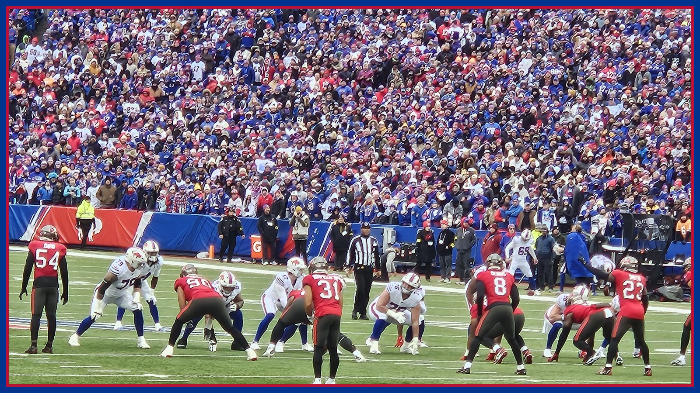

Film Room: James Cook tied Terry Allen's 30-year-old record in one season — now New England decides if he owns it alone
James Cook tied Terry Allen's NFL record with his 10th straight game of at least 75 rushing yards and a touchdown on Thanksgiving night, per Buffalo Rumblings — and he did it all in one season, averaging 111.4 yards per game across the streak. Film Room breaks down the system behind the streak, and the Dec. 6 game at New England where Cook can own the record alone.

Ten straight games. At least 75 rushing yards and a rushing touchdown in every single one of them. James Cook did not just have a big Thanksgiving night — he tied the longest streak of its kind in NFL history, matching Terry Allen's record of 10 straight games, per Buffalo Rumblings. Allen needed parts of two seasons, 1995 and 1996 with Washington, to build his streak. Cook has done the whole thing inside one season, per Buffalo Rumblings — in fact, Buffalo's season opener is the only game this year in which Cook did not hit both marks. Film Room has graded Cook week by week all month. This is not a hot streak anymore. This is a system, and on Sunday, Dec. 6 at New England, Cook gets one game to own the record outright, per Bills Wire.
Start with what the streak actually looked like before Thanksgiving, because the floor is the story. Cook entered Thursday night having rushed for 1,003 yards and 10 touchdowns across the first nine games of the streak, averaging 111.4 yards per game and 5.1 yards per carry, per Buffalo Rumblings. Read that again: the average game in this run — not the best game, the average — is 111 yards and a score. And the streak has not been built on clearing a bare minimum, per Bills Wire: Cook has finished six of those 10 outings over 100 rushing yards while seeing more carries than he ever has in his career. A back who needs exactly 75 yards is chasing a threshold. A back averaging 111 is dictating game plans.
Thursday night was the clearest film of how. With rain and wind wrecking the passing game — Josh Allen finished 10 of 21 for 81 yards with two interceptions and an 18.3 passer rating, per Athlon Sports — head coach Joe Brady kept putting the ball in Cook's hands, per Bills Wire. Cook tied his career high with 32 carries for 117 yards and Buffalo's only touchdown, the most rushing yards any player has gained against Kansas City this season, per Bills Wire. The touchdown itself is the tell: after helping extend the possession with a fourth-down conversion, Cook changed direction on a 5-yard scoring run in the second quarter, per Bills Wire — patience, vision, finish, on a night when every yard was a grind against a stout Kansas City defense, per the Democrat and Chronicle.
The workload is the schematic point most people are missing. Thirty-two carries is not just production, it is protection. Buffalo held the ball for nearly 37 minutes against Kansas City, per the Democrat and Chronicle, and every one of those minutes was a minute Patrick Mahomes spent standing in the rain instead of attacking a secondary missing Christian Benford. Cook's streak and Jim Leonhard's defensive streak — one touchdown allowed in four games, as this site graded after Thanksgiving — are not separate stories. They are the same story told from two sides of the ball: Cook shortens the game, the defense rests, and Buffalo wins 13-10 on a night its quarterback played one of the worst games of his career. That is what a championship formula looks like in November.
The season totals now sit where the streak said they would. Cook is up to 1,177 rushing yards, second in the NFL, per WBUF. His Thanksgiving touchdown was his 11th of the season, and Thursday gave him his sixth 100-yard rushing game of the year, per Athlon Sports. The reigning rushing champion from the facts of this roster is no longer a change-of-pace weapon in Brady's offense — he is the offense's first read, its clock, and its insurance policy when Allen's grip on a wet football fails. Defenses know it is coming now. Kansas City knew. Thirty-two carries later, knowing did not matter.
Which brings the film to Dec. 6, and the opponent could not be scripted better. New England handed Buffalo its only loss of the season, 29-26 on Oct. 4, per the Democrat and Chronicle — and the Patriots are the team standing between Cook and sole possession of a 30-year-old record. He can claim the streak outright with another 75-and-a-score performance in that game, per Bills Wire. Film Room's question is not whether Brady feeds him — Thursday proved the plan does not change for weather, opponent, or scoreboard. The question is whether a defense that has had two months to study this exact run game can do what Kansas City could not. Eleven straight has never been done. One game decides it. Go Bills — and get every Patriots-week practice report and the full record watch in your inbox with The BNC Blitz.
You got the setup for free. The rest of this breakdown — the snaps, the stats, the stuff that actually wins arguments — is for BNC Blitz readers. It's free: Bills news, one stat that matters, and one take in your inbox every morning. Join the Blitz and finish the read.
Free forever. No spam, unsubscribe anytime.